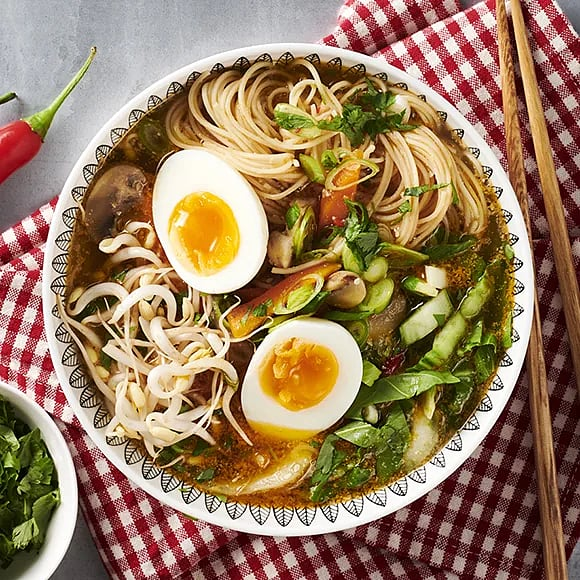

Ramen

A fine toune of ramen soup guide
The taste of a spicy yet tasty ramen soup is everything to me and hopefully to you too, the taste just melts your hunger instantly.
I will describe the ingredients to this wonderful ramen soup and also step by step on how to cook it! Ramen soup is descendent from Japan and it's very popular
among people all over the world
Ramen is a Japanese noodle soup. It is a variant of the Chinese noodle dish la mian, noodles made from wheat flour, eggs, salt and water, served together with
a plethora of different ingredients (In which I will provide in this guide). The frame has been properly integrated into Japanese cuisine and many regional variation exist.
ingredients
- 700ml chicken stock
- 3 garlic cloves, halved
- 4 tbsp soy sauce, plus extra to season
- 1 tsp Worcestershire sauce
- thumb-sized pieace of ginger,sliced
- 1/2 tsp Chinese five spice
- pinch of chilli powder
- 1 tsp white sugar (optional)
- 375g ramen noodles
- 400g sliced cooked pork or chicken breast
- 2 tsp sesame oil
Steps
- Mix 700ml chicken stock, 3 halved garlic cloves, 4 tbsp soy sauce, 1 tsp Worcestershire sauce, a sliced thumb-sized piece of ginger, ½ tsp Chinese five spice, pinch of chilli powder and 300ml water in a stockpot or large saucepan, bring to the boil, then reduce the heat and simmer for 5 mins.
- Taste the stock, add 1 tsp white sugar or a little more soy sauce to make it sweeter or saltier to your liking.
- Cook 375g ramen noodles following the pack instructions, then drain and set aside.
- Slice 400g cooked pork or chicken, fry in 2 tsp sesame oil until just starting to brown, then set aside.
- Divide the noodles between four bowls. Top each with a quarter of the meat, 25g spinach, 1 tbsp sweetcorn and two boiled egg halves each.
- Strain the stock into a clean pan, then bring to the boil once again.
- Divide the stock between the bowls, then sprinkle over 1 shredded nori sheet, sliced spring onions or shallots and a sprinkle of sesame seeds. Allow the spinach to wilt slightly before serving.